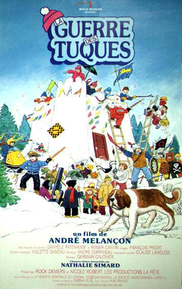

La Guerre des Tuques (1984)
There is an indescribable feeling of nostalgia that gets me every time I rewatch this. I feel like it aged surprisingly well for a 1984 movie! Every single line of dialog is hilarious and insanely quotable. I would give anything to be a kid in the 80s with no phone, no computer, an ugly ass snow suit, a giant snow castle and a group of friends with who to take any game wayyyy too seriously